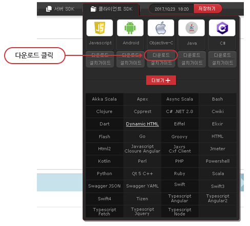
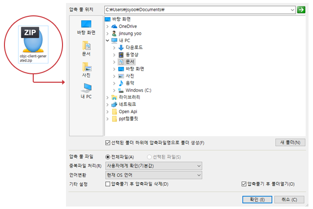
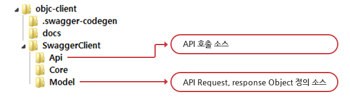

Objective-C 설치가이드
1. 서버 SDK에서 Objective-C의 다운로드 버튼을 클릭하십시오.

2. 다운받은 objc-client-generated.zip 파일을 원하는 위치에 압축을 푸십시오.

3. 소스의 폴더 구조를 확인하십시오.

4. 다음과 같은 방법으로 소스코드를 수정하십시오.
- ① README.md의 “Requirements”, “Installation & Usage”을 확인하여 개발환경에 맞도록 설치
(./objc-client/README.md 참고)
- ② “Getting Started”의 테스트 소스코드로 API 호출 테스트 수행